Candidate List 20260523 Previous Day Next Day Section 1: New Sources (age<1d) Cosmological Afterglow
Section 2: Old (1-5d) sources observed last night placeholder
Section 1: New Afterglow/FBOT Cands Last Night (4)
1. ZTF26aaydtlq (Afterglow?) [Back to Top] [Share] [Trigger Swift] [Fritz ] [Lasair ]RA, Dec: 240.78588, -17.72632 16h 3m8.61s, -17d-43m-34.75sGalactic (l, b): 354.45132, 25.41802 WARNING: 2.94 deg from ecliptic plane ext(g-r) = 0.294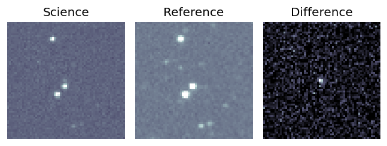
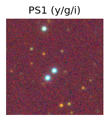
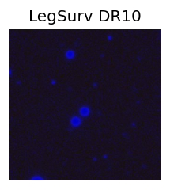
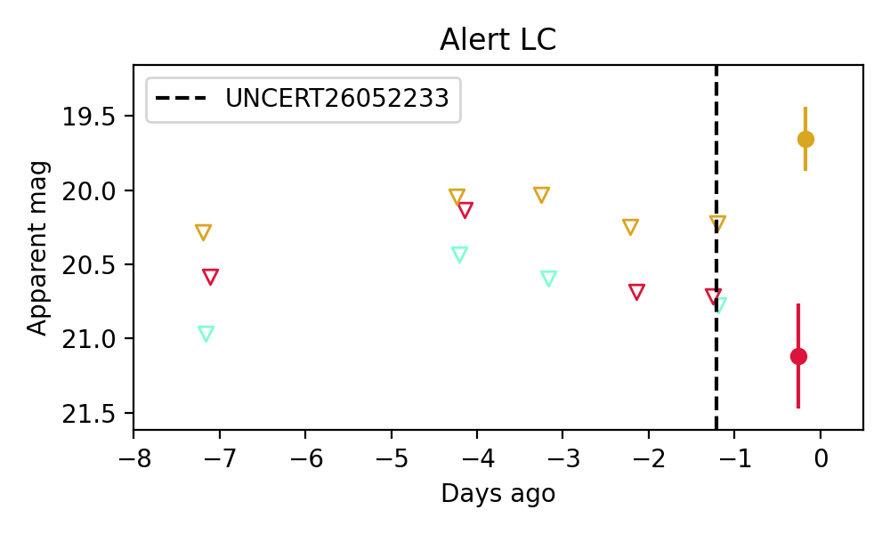
Consistent with synchrotron, g-r>0!
2. ZTF26aayfafr (Afterglow?) [Back to Top] [Share] [Trigger Swift] [Fritz ] [Lasair ]RA, Dec: 273.4774, 38.72134 18h13m54.58s, 38d43m16.83sGalactic (l, b): 65.87084, 23.47987 ext(g-r) = 0.031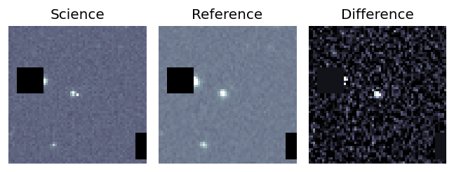
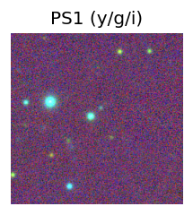
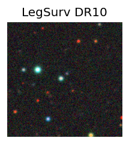
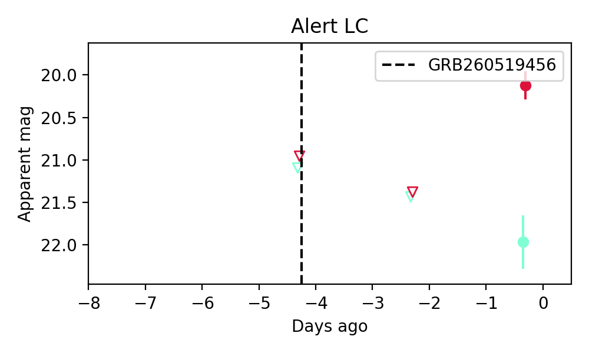
Consistent with synchrotron, g-r>0!
3. ZTF26aayfhtq (Afterglow?) [Back to Top] [Share] [Trigger Swift] [Fritz ] [Lasair ]RA, Dec: 252.71063, -17.46648 16h50m50.55s, -17d-27m-59.34sGalactic (l, b): 2.44689, 16.82938 WARNING: 4.99 deg from ecliptic plane ext(g-r) = 0.62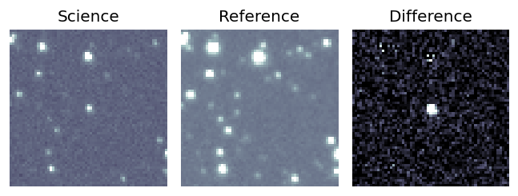
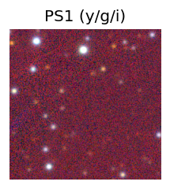
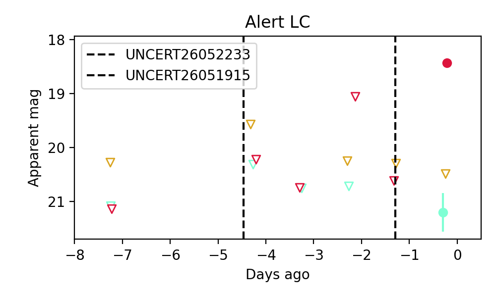
Consistent with synchrotron, g-r>0!
4. ZTF26aayfkuw (Afterglow?) [Back to Top] [Share] [Trigger Swift] [Fritz ] [Lasair ]RA, Dec: 256.87286, -20.58563 17h 7m29.49s, -20d-35m-8.27sGalactic (l, b): 2.21597, 11.81378 WARNING: 2.3 deg from ecliptic plane ext(g-r) = 0.327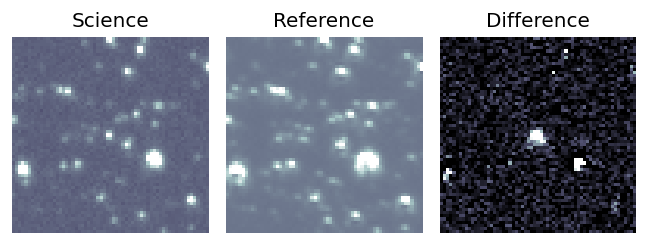
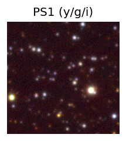
PS1: 1 source in 3 arcsec Closest: d = 3.71 arcsec photoz=0.11+/-0.00 peak abs mag = -21.43 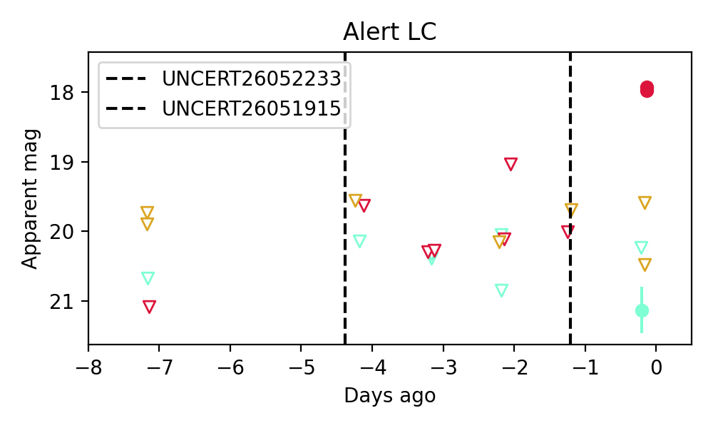
Consistent with synchrotron, g-r>0!
Section 2: Older Sources Observed Last Night (26)
0. ZTF26aawzcwt (FBOT?) [Back to Top] [Share] [Trigger Swift] [Fritz ] [Lasair ]RA, Dec: 171.38251, 45.57189 11h25m31.80s, 45d34m18.81sGalactic (l, b): 160.06013, 64.8741 ext(g-r) = 0.02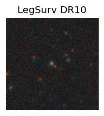
peak abs mag = -19.44 PS1: 1 source in 3 arcsec Closest: d = 0.52 arcsec photoz=0.39+/-0.24 peak abs mag = -21.80
1. ZTF26aaxgdcm (Afterglow?) [Back to Top] [Share] [Trigger Swift] [Fritz ] [Lasair ]RA, Dec: 171.22508, 47.95036 11h24m54.02s, 47d57m1.29sGalactic (l, b): 156.1579, 63.21415 ext(g-r) = 0.017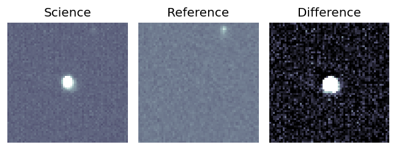
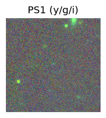
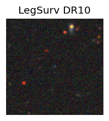
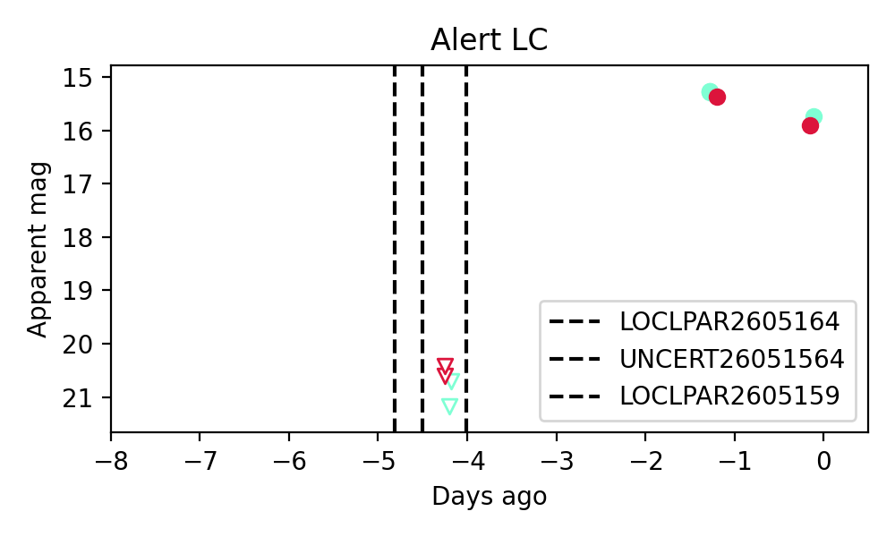
2. ZTF26aaxhekl (Afterglow?) [Back to Top] [Share] [Trigger Swift] [Fritz ] [Lasair ]RA, Dec: 213.38247, 4.7545 14h13m31.79s, 4d45m16.20sGalactic (l, b): 347.73345, 60.27656 ext(g-r) = 0.024LegacySurvey: 1 sources in 3 arcsec Closest: d = 0.23 arcsec, 309.9 deg (east of north) photoz=2.18 (68% bounds 1.23, 2.43), type=PSF peak abs mag = -29.74 (68% bounds -28.21, -30.02) Consistent with synchrotron, g-r>0!
3. ZTF26aaxhhid (Afterglow?) [Back to Top] [Share] [Trigger Swift] [Fritz ] [Lasair ]RA, Dec: 222.16174, 18.27637 14h48m38.82s, 18d16m34.92sGalactic (l, b): 20.96736, 61.63752 ext(g-r) = 0.047peak abs mag = -19.07 LegacySurvey: 1 sources in 3 arcsec Closest: d = 0.28 arcsec, 249.6 deg (east of north) photoz=0.06 (68% bounds 0.04, 0.11), type=SER peak abs mag = -18.7 (68% bounds -17.5, -20.09) Consistent with synchrotron, g-r>0!
4. ZTF26aaxhvtq (Afterglow?) [Back to Top] [Share] [Trigger Swift] [Fritz ] [Lasair ]RA, Dec: 253.05842, -4.10199 16h52m14.02s, -4d-6m-7.15sGalactic (l, b): 14.42609, 24.1147 ext(g-r) = 0.232
5. ZTF26aaxhwhr (Afterglow?) [Back to Top] [Share] [Trigger Swift] [Fritz ] [Lasair ]RA, Dec: 251.24251, -12.02058 16h44m58.20s, -12d-1m-14.07sGalactic (l, b): 6.21823, 21.1844 ext(g-r) = 0.555
6. ZTF26aaxjsgp (Afterglow?) [Back to Top] [Share] [Trigger Swift] [Fritz ] [Lasair ]RA, Dec: 179.3401, 8.29739 11h57m21.62s, 8d17m50.60sGalactic (l, b): 266.22517, 67.23103 ext(g-r) = 0.02peak abs mag = -18.43 LegacySurvey: 1 sources in 3 arcsec Closest: d = 6.66 arcsec, 33.9 deg (east of north) photoz=0.07 (68% bounds 0.06, 0.07), type=SER peak abs mag = -18.35 (68% bounds -18.13, -18.54) Consistent with synchrotron, g-r>0!
7. ZTF26aaxmqrj (Afterglow?) [Back to Top] [Share] [Trigger Swift] [Fritz ] [Lasair ]RA, Dec: 186.08019, 58.89094 12h24m19.25s, 58d53m27.37sGalactic (l, b): 129.52045, 57.88909 ext(g-r) = 0.014peak abs mag = -19.33 PS1: 1 source in 3 arcsec Closest: d = 0.28 arcsec photoz=0.10+/-0.01 peak abs mag = -18.84 Consistent with synchrotron, g-r>0!
8. ZTF26aaxnixn (Afterglow?) [Back to Top] [Share] [Trigger Swift] [Fritz ] [Lasair ]RA, Dec: 291.49256, -18.63277 19h25m58.21s, -18d-37m-57.97sGalactic (l, b): 19.74597, -15.79987 WARNING: 3.3 deg from ecliptic plane ext(g-r) = 0.098
9. ZTF26aaxnjtw (FBOT?) [Back to Top] [Share] [Trigger Swift] [Fritz ] [Lasair ]RA, Dec: 310.00047, -10.29482 20h40m0.11s, -10d-17m-41.34sGalactic (l, b): 35.91391, -28.7475 ext(g-r) = 0.054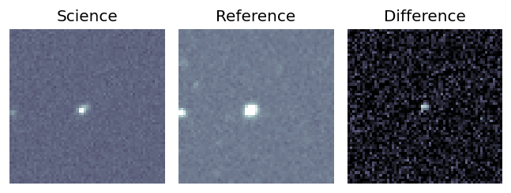
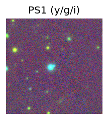
LegacySurvey: 1 sources in 3 arcsec Closest: d = 0.54 arcsec, 131.5 deg (east of north) photoz=1.38 (68% bounds 1.3, 1.49), type=PSF peak abs mag = -24.99 (68% bounds -24.83, -25.2) 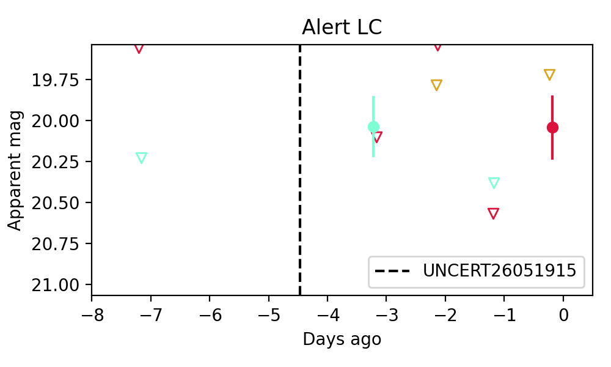
10. ZTF26aaxpqtd (Afterglow?) [Back to Top] [Share] [Trigger Swift] [Fritz ] [Lasair ]RA, Dec: 195.55616, -14.9683 13h 2m13.48s, -14d-58m-5.89sGalactic (l, b): 306.81348, 47.82213 ext(g-r) = 0.058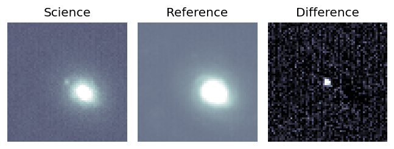
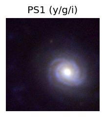
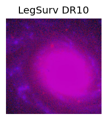
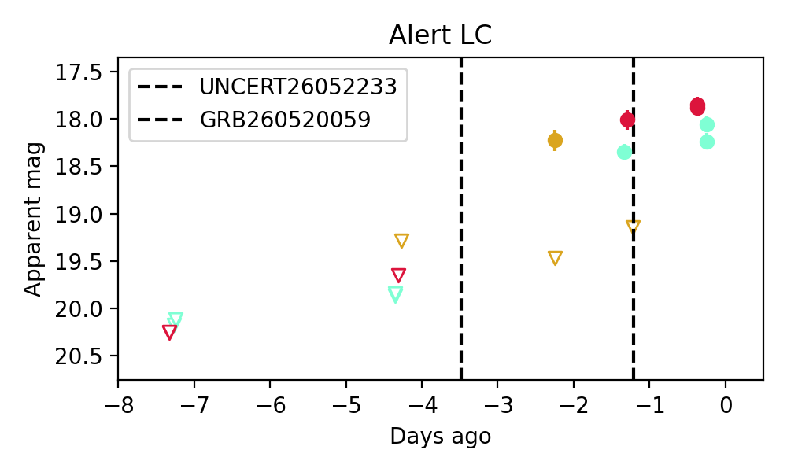
Consistent with synchrotron, g-r>0!
11. ZTF26aaxrewv (Afterglow?) [Back to Top] [Share] [Trigger Swift] [Fritz ] [Lasair ]RA, Dec: 264.75712, -12.64103 17h39m1.71s, -12d-38m-27.72sGalactic (l, b): 13.1808, 9.79024 ext(g-r) = 0.544PS1: 1 source in 3 arcsec Closest: d = 5.24 arcsec photoz=1.03+/-0.11 peak abs mag = -26.18
12. ZTF26aaxtpkn (Afterglow?) [Back to Top] [Share] [Trigger Swift] [Fritz ] [Lasair ]RA, Dec: 294.64949, 8.16484 19h38m35.88s, 8d 9m53.43sGalactic (l, b): 45.64616, -6.61772 ext(g-r) = 0.39
13. ZTF26aaxtugs (Afterglow?FBOT?) [Back to Top] [Share] [Trigger Swift] [Fritz ] [Lasair ]RA, Dec: 282.85038, -5.64019 18h51m24.09s, -5d-38m-24.69sGalactic (l, b): 27.90474, -2.56047 ext(g-r) = 1.149PS1: 1 source in 3 arcsec Closest: d = 1.10 arcsec photoz=0.37+/-0.01 peak abs mag = -25.69
14. ZTF26aaybdsh (FBOT?) [Back to Top] [Share] [Trigger Swift] [Fritz ] [Lasair ]RA, Dec: 221.10791, 3.4877 14h44m25.90s, 3d29m15.72sGalactic (l, b): 356.65037, 54.12341 ext(g-r) = 0.035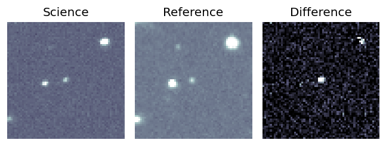
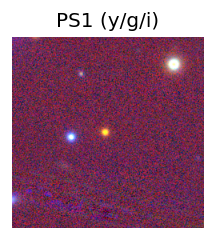
LegacySurvey: 1 sources in 3 arcsec Closest: d = 0.94 arcsec, 112.0 deg (east of north) photoz=0.26 (68% bounds 0.04, 0.58), type=PSF peak abs mag = -21.45 (68% bounds -17.08, -23.5) 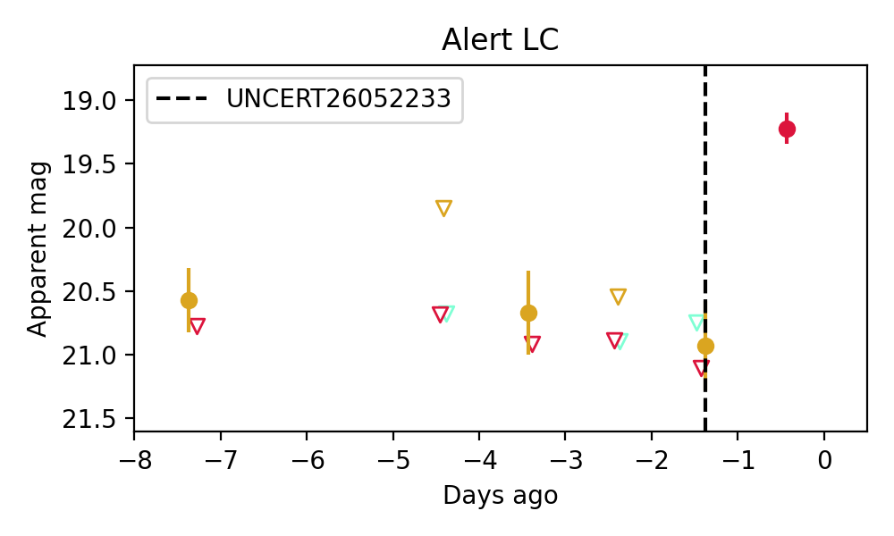
15. ZTF26aaybkue (FBOT?) [Back to Top] [Share] [Trigger Swift] [Fritz ] [Lasair ]RA, Dec: 242.06764, -14.97057 16h 8m16.23s, -14d-58m-14.06sGalactic (l, b): 357.64032, 26.35391 ext(g-r) = 0.322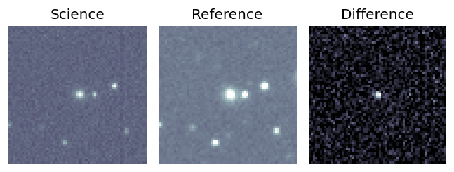
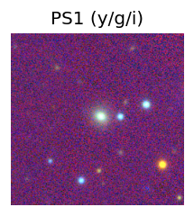
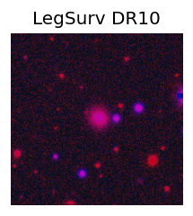
peak abs mag = -19.64 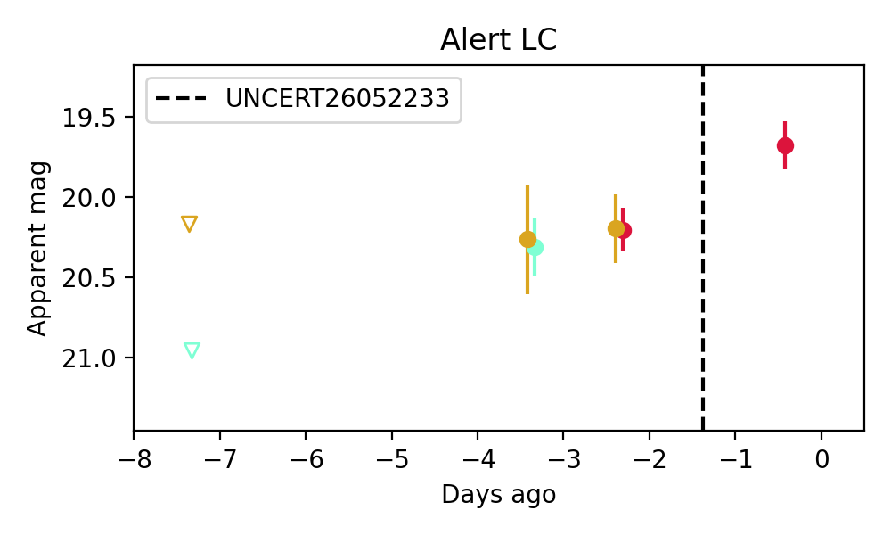
Consistent with synchrotron, g-r>0!
16. ZTF26aaybofw (FBOT?) [Back to Top] [Share] [Trigger Swift] [Fritz ] [Lasair ]RA, Dec: 237.79642, -14.76777 15h51m11.14s, -14d-46m-3.99sGalactic (l, b): 354.65346, 29.53575 ext(g-r) = 0.183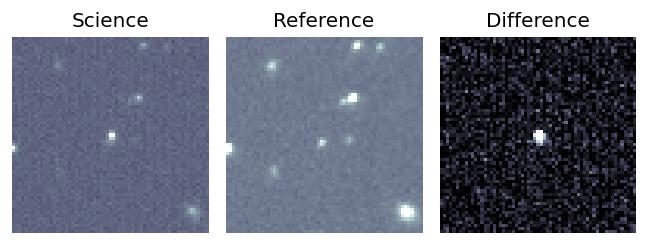
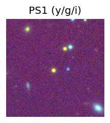
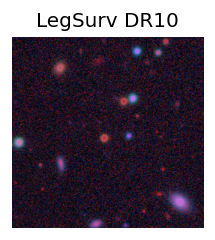
LegacySurvey: 1 sources in 3 arcsec Closest: d = 2.50 arcsec, 149.3 deg (east of north) photoz=0.18 (68% bounds 0.02, 0.79), type=PSF peak abs mag = -21.63 (68% bounds -16.55, -25.36) 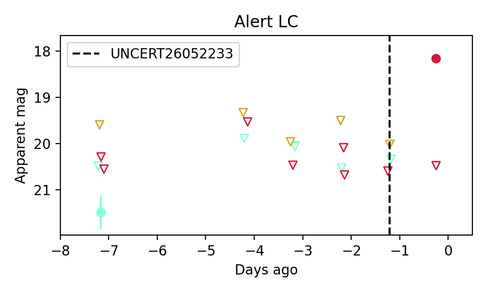
17. ZTF26aaybrck (Afterglow?) [Back to Top] [Share] [Trigger Swift] [Fritz ] [Lasair ]RA, Dec: 232.8238, -16.76765 15h31m17.71s, -16d-46m-3.54sGalactic (l, b): 349.0536, 31.43808 WARNING: 2.22 deg from ecliptic plane ext(g-r) = 0.137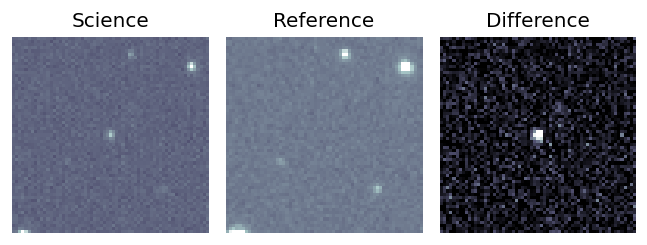
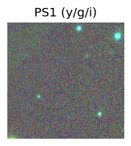
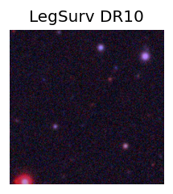
LegacySurvey: 1 sources in 3 arcsec Closest: d = 2.68 arcsec, 289.7 deg (east of north) photoz=0.79 (68% bounds 0.61, 1.13), type=REX peak abs mag = -24.72 (68% bounds -24.05, -25.69) 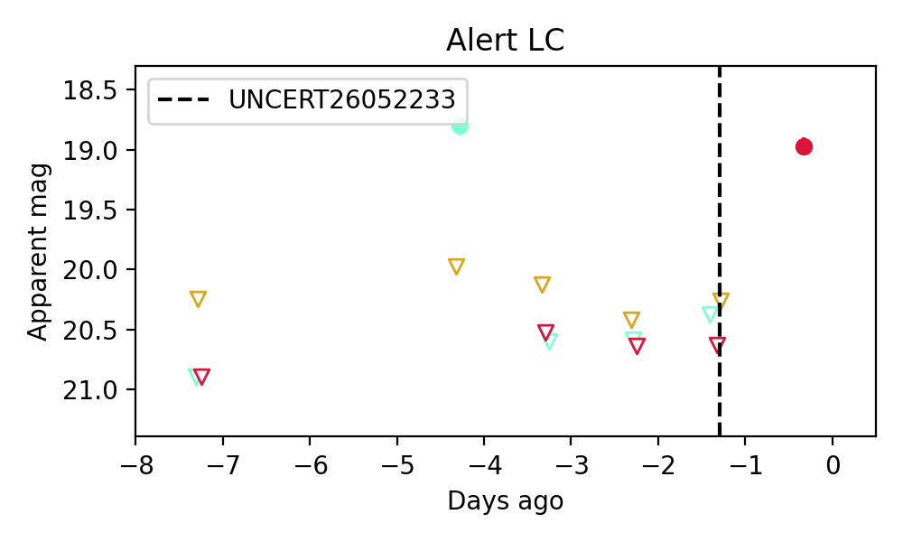
18. ZTF26aaychtj (FBOT?) [Back to Top] [Share] [Trigger Swift] [Fritz ] [Lasair ]RA, Dec: 258.47081, 76.15089 17h13m52.99s, 76d 9m3.19sGalactic (l, b): 108.02704, 32.05239 ext(g-r) = 0.044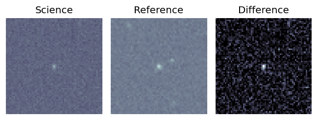
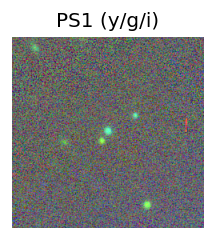
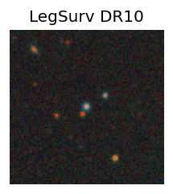
peak abs mag = -18.99 PS1: 1 source in 3 arcsec Closest: d = 0.13 arcsec photoz=0.25+/-0.12 peak abs mag = -20.45 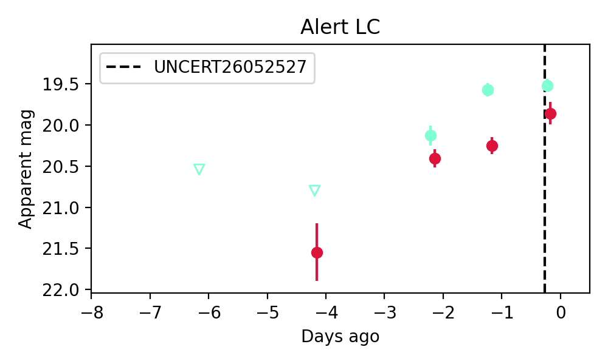
19. ZTF26aaycrnw (FBOT?) [Back to Top] [Share] [Trigger Swift] [Fritz ] [Lasair ]RA, Dec: 236.93152, 37.71367 15h47m43.57s, 37d42m49.21sGalactic (l, b): 60.33492, 51.69923 ext(g-r) = 0.017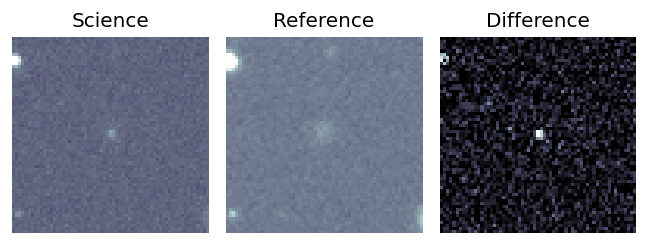
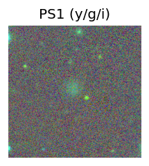
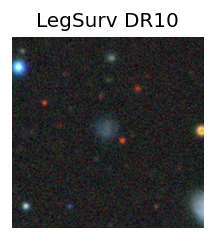
peak abs mag = -17.19 PS1: 1 source in 3 arcsec Closest: d = 0.41 arcsec photoz=0.33+/-0.17 peak abs mag = -20.87 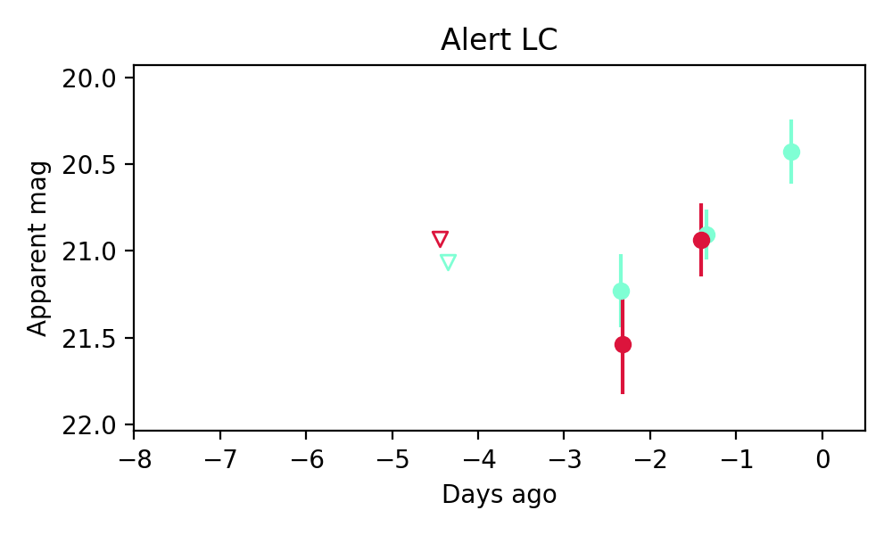
Consistent with synchrotron, g-r>0!
20. ZTF26aaycvex (FBOT?) [Back to Top] [Share] [Trigger Swift] [Fritz ] [Lasair ]RA, Dec: 263.69604, 48.12405 17h34m47.05s, 48d 7m26.60sGalactic (l, b): 74.68151, 32.31262 ext(g-r) = 0.037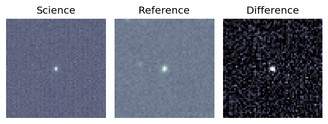
PS1: 1 source in 3 arcsec Closest: d = 0.12 arcsec photoz=0.17+/-0.08 peak abs mag = -19.60
21. ZTF26aaydsqz (FBOT?) [Back to Top] [Share] [Trigger Swift] [Fritz ] [Lasair ]RA, Dec: 235.55882, -11.16304 15h42m14.12s, -11d-9m-46.95sGalactic (l, b): 355.94729, 33.60183 ext(g-r) = 0.182LegacySurvey: 1 sources in 3 arcsec Closest: d = 0.50 arcsec, 144.1 deg (east of north) photoz=0.83 (68% bounds 0.65, 1.01), type=REX peak abs mag = -24.0 (68% bounds -23.36, -24.53)
22. ZTF26aayehgg (Afterglow?) [Back to Top] [Share] [Trigger Swift] [Fritz ] [Lasair ]RA, Dec: 292.02766, 8.34017 19h28m6.64s, 8d20m24.61sGalactic (l, b): 44.55852, -4.25321 ext(g-r) = 0.719
23. ZTF26aayerke (FBOT?) [Back to Top] [Share] [Trigger Swift] [Fritz ] [Lasair ]RA, Dec: 245.4825, 55.86337 16h21m55.80s, 55d51m48.13sGalactic (l, b): 85.43917, 42.89076 ext(g-r) = 0.007peak abs mag = -19.72 PS1: 1 source in 3 arcsec Closest: d = 0.94 arcsec photoz=0.20+/-0.10 peak abs mag = -19.50 Consistent with synchrotron, g-r>0!
24. ZTF26aayewuq (FBOT?) [Back to Top] [Share] [Trigger Swift] [Fritz ] [Lasair ]RA, Dec: 242.79668, 49.7888 16h11m11.20s, 49d47m19.67sGalactic (l, b): 77.70336, 45.89271 ext(g-r) = 0.022peak abs mag = -22.09 PS1: 1 source in 3 arcsec Closest: d = 1.09 arcsec photoz=0.59+/-0.11 peak abs mag = -22.38 Consistent with synchrotron, g-r>0!
25. ZTF26aayfbqq (Afterglow?) [Back to Top] [Share] [Trigger Swift] [Fritz ] [Lasair ]RA, Dec: 255.59021, 8.86269 17h 2m21.65s, 8d51m45.67sGalactic (l, b): 28.41977, 28.23908 ext(g-r) = 0.1LegacySurvey: 1 sources in 3 arcsec Closest: d = 3.24 arcsec, 200.3 deg (east of north) photoz=0.9 (68% bounds 0.8, 1.0), type=REX peak abs mag = -24.65 (68% bounds -24.34, -24.93)